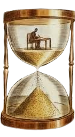

|  |
A história é a ciência que estuda o passado da humanidade, desde os primórdios até os dias atuais, buscando compreender os eventos, as transformações sociais, culturais, políticas e econômicas que moldaram as sociedades ao longo do tempo. É uma disciplina que nos permite entender as origens das instituições, dos costumes, das ideias e dos conflitos que caracterizam o mundo contemporâneo.
Uma das áreas centrais da história é a história antiga, que se dedica ao estudo das primeiras civilizações humanas, como as civilizações mesopotâmica, egípcia, grega e romana. Compreender a história antiga é essencial para entender as bases da civilização ocidental e as origens de muitas das instituições e ideias que ainda influenciam o mundo moderno.
A história medieval é outra área importante da disciplina, que se concentra no estudo da Europa e do Mediterrâneo entre os séculos V e XV. Compreender a história medieval é essencial para entender o surgimento do feudalismo, as Cruzadas, a expansão islâmica, a formação das monarquias europeias e o desenvolvimento da cultura e da religião na Idade Média.
A história moderna é uma área da história que abrange o período que vai do final da Idade Média até o final do século XVIII, marcado por importantes transformações sociais, políticas, econômicas e culturais. Compreender a história moderna é essencial para entender eventos como o Renascimento, a Reforma Protestante, as grandes navegações, a Revolução Científica e a Revolução Industrial.
A história contemporânea é outra área importante da disciplina, que abrange o período que vai do final do século XVIII até os dias atuais. Compreender a história contemporânea é essencial para entender eventos como as Revoluções Francesa e Industrial, as duas guerras mundiais, a Guerra Fria, os movimentos de independência na África e na Ásia, e os desafios globais do século XXI, como o terrorismo, as mudanças climáticas e a globalização.
Além dessas áreas principais, a história também inclui disciplinas especializadas como a história cultural, que se dedica ao estudo das práticas culturais e das representações simbólicas ao longo do tempo, a história econômica, que investiga as transformações econômicas e as relações de produção ao longo da história, e a história das mulheres, que se concentra no papel das mulheres na sociedade ao longo do tempo.
Recentemente, a história tem se beneficiado dos avanços tecnológicos, como a digitalização de arquivos históricos e o uso de ferramentas digitais para análise de dados históricos. Essas tecnologias têm o potencial de tornar a pesquisa histórica mais acessível e colaborativa, ampliando nosso entendimento do passado e suas conexões com o presente.
Em resumo, a história é uma disciplina que nos permite entender o passado da humanidade e suas influências sobre o presente. Ao explorar os eventos, as transformações e as continuidades ao longo do tempo, a história nos ajuda a compreender melhor a nós mesmos, nossas sociedades e nosso lugar no mundo.
|